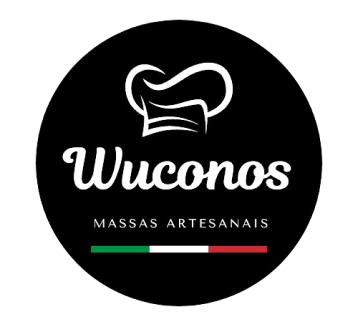
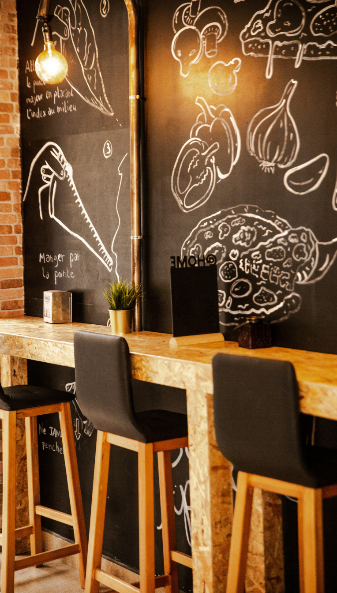

Voltar
Quem somos nós
A Wuconos é uma pizzaria tradicional que veio de Roma, na Itália, com franquia no Brasil.
Trabalhamos sempre prezando a satisfação do cliente, entregando um ambiente bem fiel a cultura do país
